Ведёт заседание вместо секретаря. Собирает протокол сам. Материалы дела остаются в контуре суда.
Дело открывается само, текст идёт по ходу речи, протокол готов к перерыву.
Секретарь выбирает файл заседания, задаёт название и шаблон обработки, запускает. Система расшифровывает запись и собирает резюме: суд, номер дела, состав, стороны, предмет спора, результат. Снято на деле А12-4362/2020 Двенадцатого арбитражного апелляционного суда.
← Схема прокручивается вбок
Видеозапись зала, поверх — реплика говорящего, ниже синхронно подсвечивается строка транскрипта. Клик по строке перематывает запись на этот момент.
Звук и видео идут с оборудования зала на сервер суда, текст появляется у секретаря по ходу речи. Отдельный оператор не нужен.
Секретарь исправляет распознанное слово прямо в строке транскрипта. Поиск находит нужный фрагмент и таймкод.
Сервер стоит в здании суда. Внешний канал архитектурой не предусмотрен.
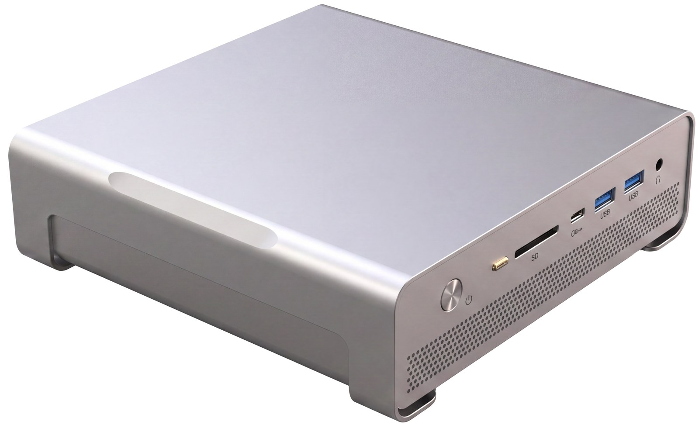
Она стоит в здании суда. Транскрибация, анализ и хранение идут здесь же — внешнего канала у неё нет. Конфигурация подбирается под нагрузку конкретного суда.
Стойка стоит в помещении заказчика и связана только с внутренней сетью. Внешнего канала нет по самой схеме монтажа.
← Схема прокручивается вбок
Расчёты идут на сервере суда. Внешние сервисы в схеме отсутствуют.
Железо и модели отечественные, ответственность единая.
Проектируется под требования регуляторов и реестр отечественного ПО.
Заседание идёт, даже когда внешние каналы недоступны.
Четыре слоя, каждый модуль — конкретная операция суда.
← Схема прокручивается вбок
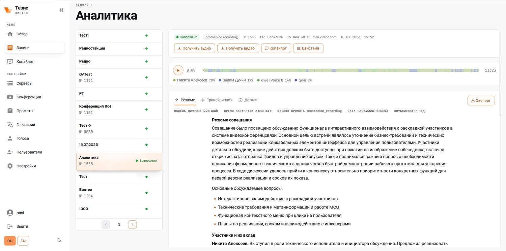
Слева список записей, вверху дорожка с долей реплик каждого говорящего, дальше вкладки «Резюме», «Транскрипция», «Детали». В шапке — модель, шаблон промпта, время обработки и кнопка выгрузки.
Проект акта сверяется с нормой в её редакции на дату и с практикой ВС РФ. На выходе — список замечаний, каждое со ссылкой на конкретную норму.
Девять экранов работающей системы. Листайте вбок.
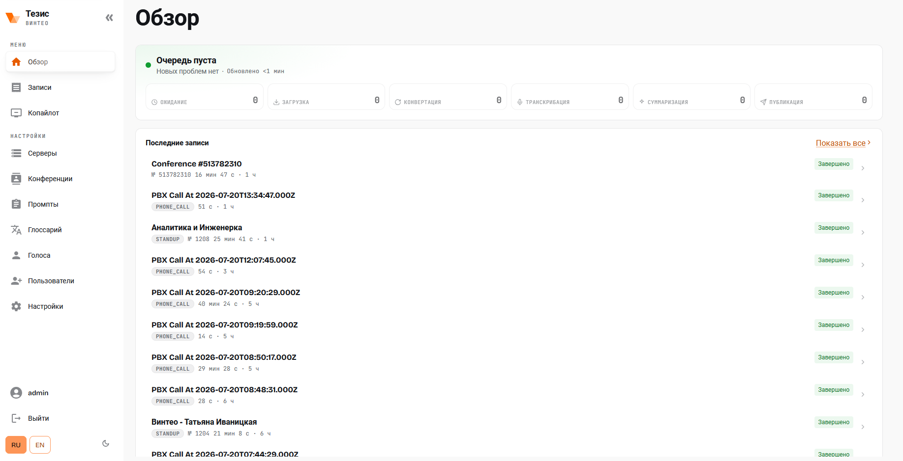
Ожидание, загрузка, конвертация, транскрибация, суммаризация, публикация — каждая стадия со своим счётчиком. Ниже последние заседания и их статус.
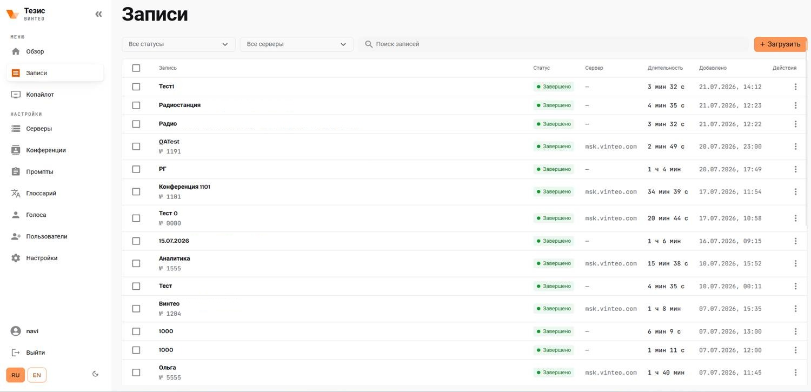
Номер, длительность, сервер, дата, статус обработки. Фильтры по статусу и серверу, поиск по названию и номеру.
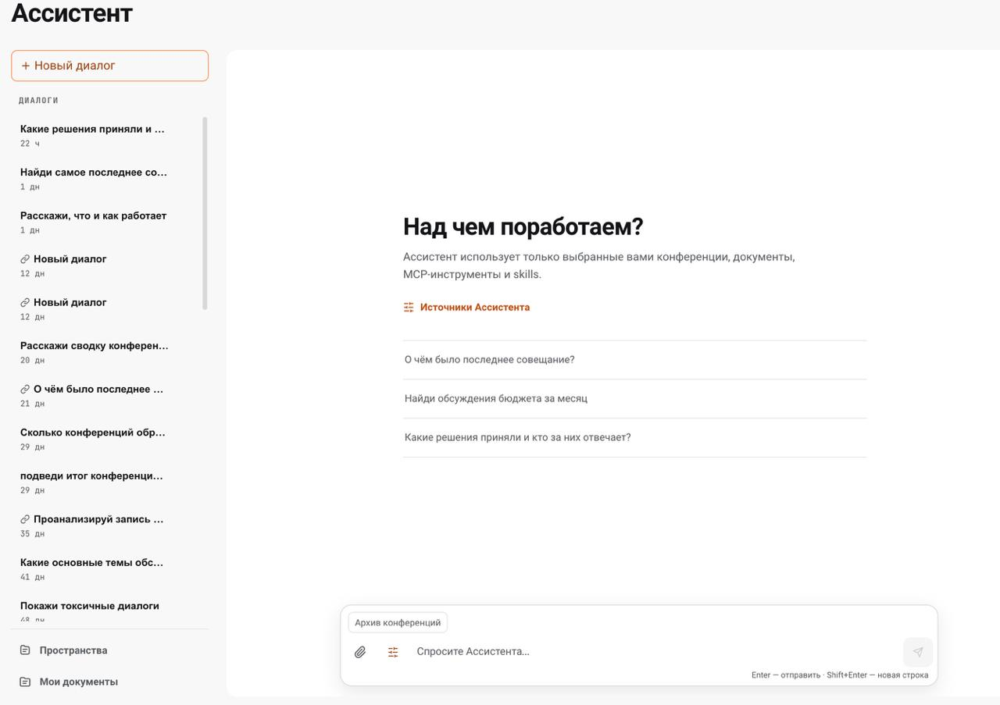
История диалогов слева, вопрос внизу, под полем ввода — активный контекст. Отвечает только по выбранным материалам.
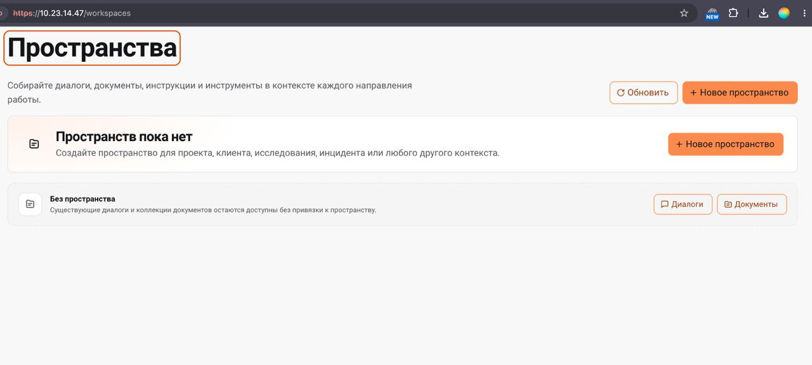
Диалоги, документы и инструкции собираются в контекст одного направления работы — дела, проверки, категории споров.
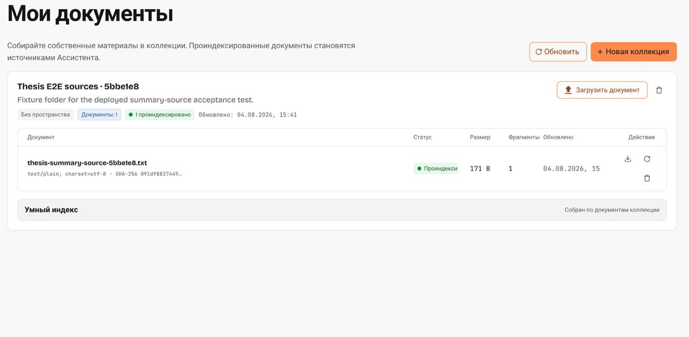
Коллекция материалов с индексацией: статус документа, размер, число фрагментов, дата обновления. Проиндексированное становится источником ответа.
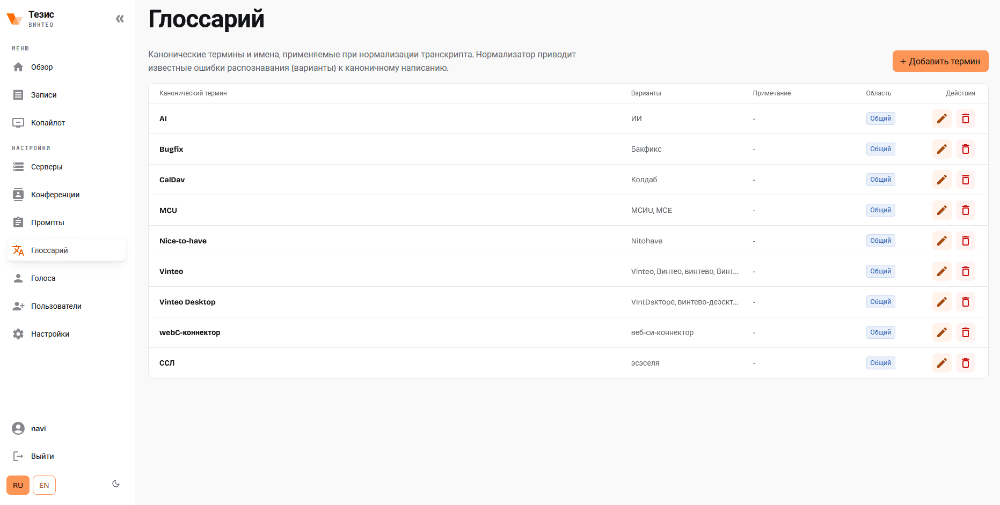
Каноническое написание и варианты, которые выдаёт распознавание. Нормализатор приводит их к одному виду — фамилии, номера норм, аббревиатуры.
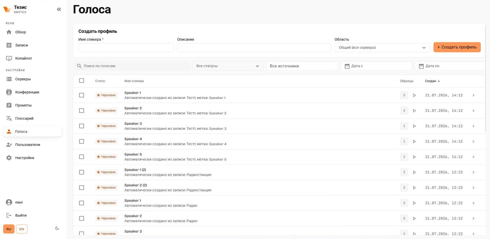
Профили создаются из записи автоматически, к каждому — образцы для прослушивания. После подтверждения имени реплики подписываются в протоколе.
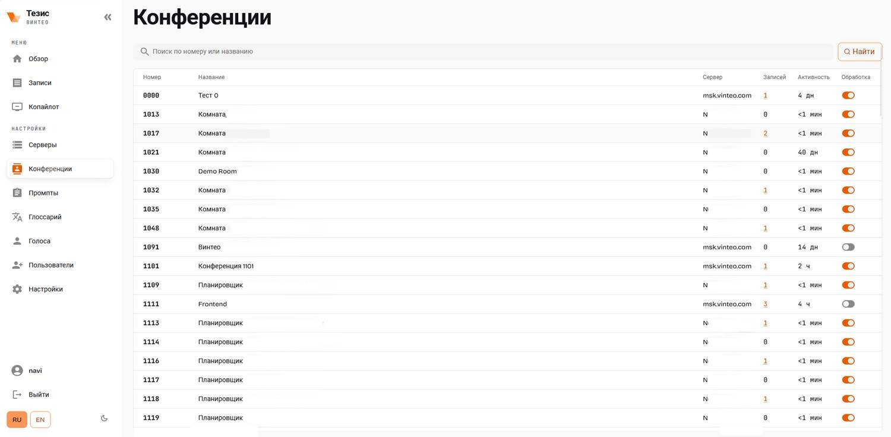
Реестр залов: номер, сервер, число записей, последняя активность. Обработка включается отдельно для каждого зала.
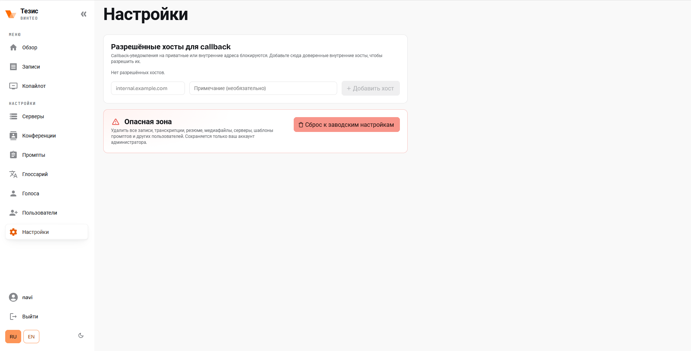
Уведомления на внутренние адреса блокируются, пока хост не внесён в список разрешённых. Здесь же полный сброс системы — под администратором.
Приоритетные задачи ИИ в судебной деятельности.
| Сценарий | Задействованные модули | Готовность |
|---|---|---|
| 01 Транскрибация заседания | 02Транскрибация03Синхронный плеер | Работает |
| 02 Протокол заседания | 02Транскрибация04Конструктор протокола05Библиотека шаблонов | Настройка |
| 03 Умный корректор акта | 06Умный корректор | Работает |
| 04 Суммаризация документов | 08Суммаризация | Работает |
| 05 Узкие базы знаний | 10Базы знаний | Настройка |
| 06 Широкие базы знаний | 10Базы знаний | Настройка |
| 07 Правовой аудит акта | 07Правовой аудит10Базы знаний | Работает |
| 08 Песочница дела | 09Песочница дела | Работает |
| 09 Проверка искового заявления | 05Библиотека шаблонов06Умный корректор10Базы знаний | Настройка |
| 10 Проекты решений и определений | 05Библиотека шаблонов08Суммаризация09Песочница дела | Настройка |
| 11 Назначение экспертизы | 05Библиотека шаблонов09Песочница дела | В развитии |
| 12 Анализ экспертизы | 08Суммаризация09Песочница дела | В развитии |
| 13 Рукописный текст | 01Карточка дела | В развитии |
Модули 11 «Разграничение доступа» и 12 «Журнал действий» включены во всех тринадцати сценариях — их в таблице не повторяем.
Вопрос обычными словами: какое дело рассматривали и что решили. Ответ разбирает суть спора и решение суда, внизу указан источник — конкретная запись заседания.
Комплектность приложений проверяется по списку. Чего не хватает — видно с основанием, на выходе заготовка определения об оставлении без движения.
Что предлагаем сделать в ближайшем цикле работ.
Речевой движок и языковые модели заменяемы. Более точная модель подключается настройкой.
Из списка записей — в карточку заседания: транскрибация 100 %, девять минут звука разобраны, расшифровка на месте, резюме собирается следом.
Модель на стенде — локальная, qwen3.6-27b, и меняется в том же поле. Рядом отмечается, с чем работать: архив конференций, кодексы, MCP-инструменты, доверенные skills.
Отдельный документ на языке работы суда: кто запускает, что подаёт, что получает.
Предложения пользователей попадают в конструктор промптов и становятся доступны всему суду.
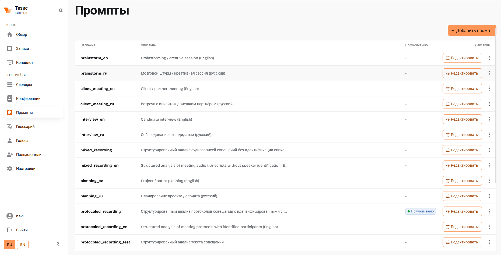
Название, описание, признак «по умолчанию», правка. Новый сценарий добавляется здесь же и сразу доступен суду.
Формат согласуем до начала работ и реализуем как управляемый шаблон.
Шаблон промпта court_hearing даёт готовую структуру: общие сведения, ход заседания с таймкодами, разъяснение порядка обжалования, краткий итог и отдельным блоком — неясности транскрипции. Выгрузка — кнопка «Экспорт» в шапке.
Первый коннектор — СПС. Делаем его как экземпляр универсального модуля: следующий источник подключается так же.
Сейчас в контуре стенда — загруженные кодексы: индекс находит три фрагмента за 477 мс, ответ по статье 270 АПК РФ идёт со списком источников — файл кодекса и конкретная глава. КонсультантПлюс подключается тем же коннектором.
Суд собирает свои сценарии сам — без программирования и без ожидания следующей версии.
Шаблон обработки — редактируемый текст: что извлечь из заседания, в каком порядке, каким языком. После правки резюме пересоздаётся по новому шаблону.
Разграничение заложено в модель данных: чужое дело не откроется по ссылке, не найдётся поиском, не попадёт в ответ модели.
| Роль | Свои дела | Чужие дела | Базы знаний | Шаблоны | Журнал |
|---|---|---|---|---|---|
| Судья | Полный доступ | Нет | Общие и свои | Свои и общие | По своим делам |
| Помощник судьи | Дела состава | Нет | Общие и состава | Свои и общие | Нет |
| Секретарь | Дела состава | Нет | Общие | Использование | Нет |
| Работник аппарата | Назначенные документы | Нет | Общие | Использование | Нет |
| Администратор | Содержимое не видит | Нет | Управление | Управление | Полный |
Администратор управляет учётными записями и источниками, но не имеет доступа к содержанию дел.
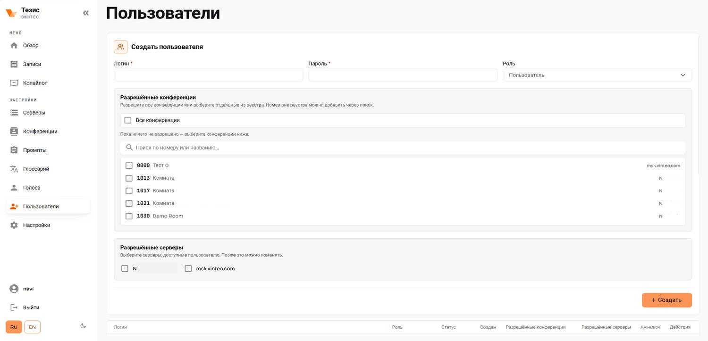
Роль, разрешённые залы, разрешённые серверы. Что не отмечено — не появится ни в списке, ни в поиске.
Данные остаются в контуре: так устроена архитектура. При подготовке к публикации выполняется обезличивание.
Обращения, просмотры, выгрузки, изменения шаблонов и баз. Журнал не редактируется изнутри системы.
Сверка с эталонами заказчика и хронометраж. Пороги фиксируются до испытаний.
| Метрика | Способ измерения | Сценарии |
|---|---|---|
| Распознавание речи | Доля ошибочно распознанных слов, WER | 01, 13 |
| Диаризация | Доля реплик, отнесённых не тому говорящему, DER | 01 |
| Обязательные реквизиты | Доля реквизитов, сформированных корректно | 02, 10, 11 |
| Значимые факты | Доля обстоятельств из контрольного перечня в документе | 04, 07 |
| Выявление ошибок | Доля найденных ошибок из внесённых преднамеренно | 03, 07, 09 |
| Достоверность | Утверждения без подтверждения материалами. Норма — ноль | 04–10, 12 |
| Соответствие делу | Расхождения ФИО, сумм, дат. Норма — ноль | 10 |
| Верные ответы | Сверка с эталонными ответами контрольного набора | 05, 06, 08, 11, 12 |
| Ссылки на источник | Доля ответов с проверяемой ссылкой | 05, 06, 08 |
| Время обработки | От передачи данных до результата | все |
| Объём доработки | Время правки до готового документа | 01, 03, 10–12 |
Сроки согласуются после обследования и фиксируются календарным планом.
Как ведётся протокол сегодня, какие формы и системы приняты, что требует безопасность.
Монтаж сервера и моделей, подключение рабочих мест, проверка изоляции контура.
Формы документов, базы знаний, коннектор к КонсультантПлюс, роли и права.
Реальные дела, журнал замечаний, донастройка сценариев, замер метрик.
Занятия по ролям, руководства, записи для новых сотрудников.
Поддержка, обновление моделей и баз, развитие сценариев по запросам суда.
Судья, секретарь и администратор учатся каждый своему набору сценариев. Инструкции остаются в системе, поэтому новый сотрудник входит без повторного курса.
Секретарь работает в обычном режиме, а система замеряется по WER, DER и времени обработки. Пороги фиксируются до испытаний, поэтому приёмка идёт по числам.
IT-интегратор полного цикла: разработка ПО и решений на базе ИИ, инфраструктура, информационная безопасность, поддержка 24/7. Работаем с государственными заказчиками.
Покажем систему на ваших материалах — в вашем контуре.
Развернём стенд внутри периметра, проведём демонстрацию на реальной записи и комплекте документов. По итогам — техническое задание и календарный план.
Запросить демонстрацию →Москва, Мясницкая, 47 · Коммерческое предложение 2026 · Сроки и состав работ уточняются по результатам обследования.